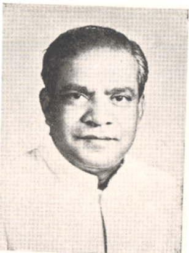

दाजीसाहेब चव्हाण

प्रमुख कार्यकाल:
पेट्रोलियम मंत्रालय, राज्य मंत्री
१९६९ - १९७१
पेट्रोलियम रसायन एवं उर्वरक मंत्रालय, राज्य मंत्री
१९६९ - १९६९
पेट्रोलियम, रसायन एवं अलौह धातु मंत्रालय, राज्य मंत्री
१९७१ - १९७१

४ जवाहरलाल नेहरू मंत्री परिषद
रक्षा मंत्रालय
उपमंत्री
प्रथम गुलजरीलाल नन्द मंत्री परिषद
लाल बहादुर शास्त्री मंत्री परिषद
द्वितीय गुलजरीलाल नन्द मंत्री परिषद
प्रथम इन्दिरा गाँधी मंत्री परिषद
द्वितीय इन्दिरा गाँधी मंत्री परिषद
४ जवाहरलाल नेहरू मंत्री परिषद

1_Upload_2924.pdf

जवाहर लाल नेहरू
o-Jawaharlal_Nehru.htmlप्रधानमंत्री
२ अप्रैल १९६२ - २७ मई १९६४
जवाहर लाल नेहरू
o-Jawaharlal_Nehru.html१ नवंबर १९६२ - २१ नवंबर १९६२
दाजीसाहेब चव्हाण
o-Dajisaheb_Chavan.htmlउपमंत्री
८ मई १९६२ - २७ मई १९६४
प्रासंगिक आदेश
1_Upload_2924.pdf[40]८ मई १९६२मंत्री परिषद1_Upload_2930.pdf[2]८ मई १९६२मंत्री परिषद1_Upload_2925.pdf[41]८ जून १९६२मंत्री परिषद1_Upload_2926.pdf[41]२ नव॰ १९६२मंत्री परिषद1_Upload_2927.pdf[41]२१ नव॰ १९६२मंत्री परिषद1_Upload_2928.pdf[41]४ दिस॰ १९६२मंत्री परिषद1_Upload_2893.pdf[32]२ सित॰ १९६३मंत्री परिषद1_Upload_2894.pdf[34]२२ नव॰ १९६३मंत्री परिषद